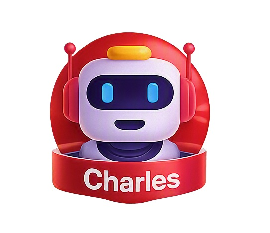

Não é um chatbot genérico. É um especialista em Data Center e Operações NOC que conhece a sua infraestrutura, cita a fonte de cada resposta e nunca inventa o que não tem como provar.
Coloque qualquer assistente de IA para responder uma pergunta operacional. Ele pode responder — mas sem garantir que esteja certo.
Não conhece seus procedimentos, seus runbooks, o histórico da sua unidade nem a particularidade do seu ambiente.
Responde com a mesma segurança um fato confirmado e uma suposição. Você não consegue auditar o que ele disse.
Quando não sabe, preenche a lacuna — com a mesma fluência de quando está certo. Esse é o risco real.
O risco não é ele errar. É errar parecendo estar certo — durante um incidente, quando não há tempo de conferir.
Um especialista de Data Center e Operações NOC que trabalha com a documentação real da organização — e cita a fonte de tudo que responde.
Não é um modelo geral treinado na internet. Não "sabe de tudo" — e é justamente por isso que ele não erra sobre o que não tem.
Medidos automaticamente pelo agente de qualidade, 26 vezes.
Não foi sorte. Foi medição, correção e nova medição — 26 ciclos em 8 dias.
O agente de qualidade mediu 50% de alucinação e sinalizou como risco crítico.
Prompt mestre desbloqueado — a personalidade do Charles nunca era enviada ao modelo.
Três medições consecutivas em 0%. O resultado se mantém, não foi acaso.
Um assistente generalista e um especialista têm propósitos diferentes. A comparação honesta:
| Critério | Assistente generalista | Busca corporativa | Charles |
|---|---|---|---|
| Conhece a base interna | Não | Parcial | Sim — 159 itens |
| Cita a fonte da resposta | Não | Não | Sempre |
| Auditoria de conformidade | Não | Não | ISO 42001 |
| Dados dos Data Centers | Genérico | Públicos | Internos |
| Diz quando não sabe | Às vezes | Raramente | Sempre |
| Retrato de evidências | Não | Não | 100% auditável |
| Custo por conversa | $$$ | $$ | Gratuito |
| Conhecimento geral do mundo | Excelente | Bom | Restrito ao DC |
A escolha não é Charles ou o ChatGPT. São camadas diferentes: o assistente generalista para o conhecimento amplo, o Charles para o que precisa de fonte e não pode errar.
Quando a resposta vem de dado estruturado, ela não vem de adivinhação — vem da planilha.
Endereço, CEP, bairro e cidade das 11 unidades.
Telefone e ramal de cada Data Center.
Lista completa e atualizada das unidades.
Cobertura por região e estado.
Encaminha para a fonte oficial — nunca inventa status.
58% vieram de dado estruturado — onde alucinação é matematicamente impossível.
Um assistente que responde tudo com relatório técnico cansa. O Charles sabe conversar — e sabe a hora certa de ser técnico.
Reconhece o horário e cumprimenta corretamente.
Sobre clima, diz com honestidade o que não sabe — em vez de inventar.
Para a execução quando você interrompe.
Redireciona assunto fora de escopo para o domínio, sem ser grosseiro.
Não inventa previsão do tempo.
Não afirma que um Data Center está "operacional" sem consultar a fonte.
Não usa formato de relatório em conversa fiada.
Não toma decisão que substitua o judgement do Analista.
Calor humano + rigor técnico. Essa combinação não é oferecida por ferramenta genérica — é o que sustenta uma decisão operacional.
O único ativo com nota alta é o próprio Charles. Isto é o que sustenta.
CPF, CNPJ, cartão, e-mail e telefone mascarados na entrada. Acesso por papéis (RBAC) via Entra ID.
Cada interação registra fonte, agente usado e nota de qualidade — permitindo auditoria de cada resposta.
Detecção ativa de tentativas de extrair o prompt ou burlar regras de segurança.
Documento que declara o que o Charles faz e não faz, revisado pela gestão.
O Charles está tecnicamente pronto para responder o que ele sabe. O que ainda não está pronto é o conhecimento das outras áreas.
A máquina está pronta. Medindo e corrigindo sozinha, 26 vezes.
86% das perguntas que chegam, ele ainda não sabe responder. Não é limitação da ferramenta — é conteúdo que falta na base.
Cada pergunta que o Charles não sabe gera um relatório de lacuna. A resposta vira item de FAQ.
Se a resposta está errada ou desatualizada, o item é corrigido e ele aprende com o dono do processo.
Cada procedimento validado por quem é o responsável técnico ganha peso e confiança na resposta.
A ferramenta está pronta, auditada e medindo o próprio desempenho. Falta o conteúdo de vocês — que só vocês têm.
Charles · Especialista em Data Center e Operações NOC
Claro Empresas · Departamento de Data Center